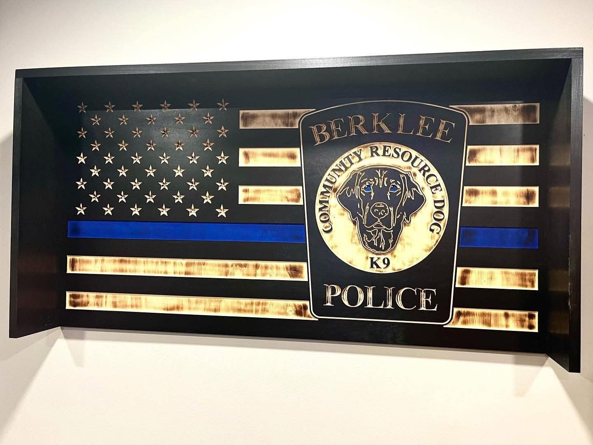

Torched Glory handmade wooden flags
Torched Glory designs handmade wooden flags with rich torch-work, carved details, bold finishes, and custom options for homes, service members, businesses, and meaningful gifts.
Burnt wood • Handcrafted detail • Custom sizes

Finished work
A gallery of flags already brought to life.
Browse examples of previous builds, then use the inquiry page to upload references, define your required size, and share the details that will make your flag personal.

How it works
From reference image to finished wall piece.
Every build starts with the details: the exact size, design idea, colors, finish, and any logos, badges, or inspiration images you want reflected in the final wooden flag.
-
01
Send measurements
Choose the exact width and height for the finished wooden flag.
-
02
Upload references
Share logos, photos, sketches, and examples that guide the design.
-
03
Confirm the build
Review the details before the flag moves into the shop.
Ready to start?
Tell Torched Glory exactly what you want built.
Submit a request with your required flag size, reference images, and custom notes so the project can begin with the right details.
Open Inquiry Form